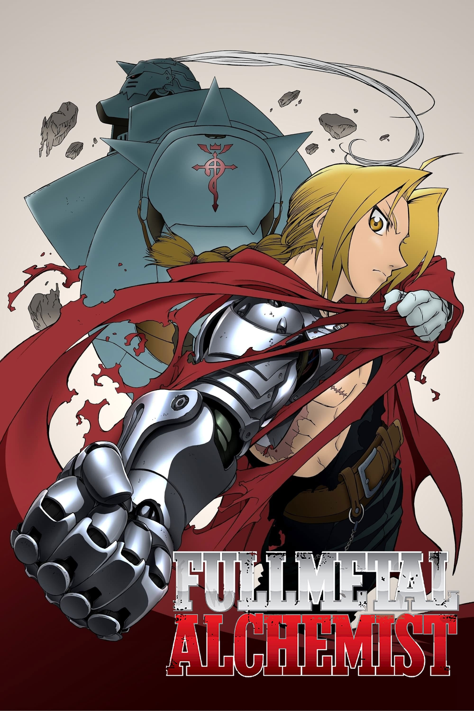
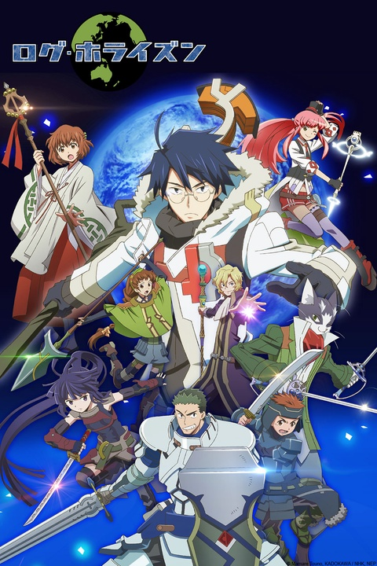
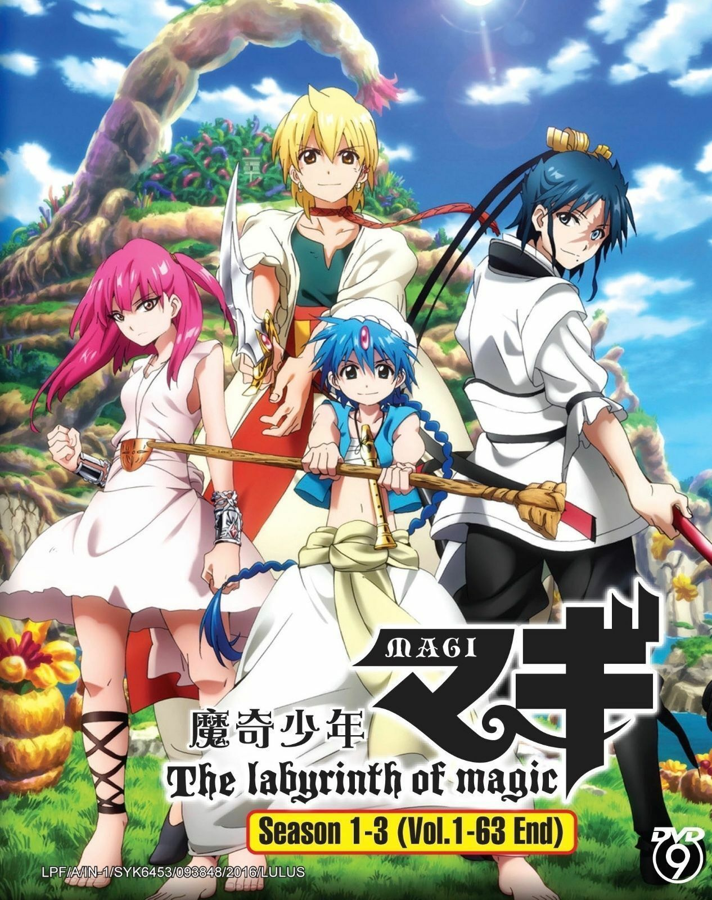
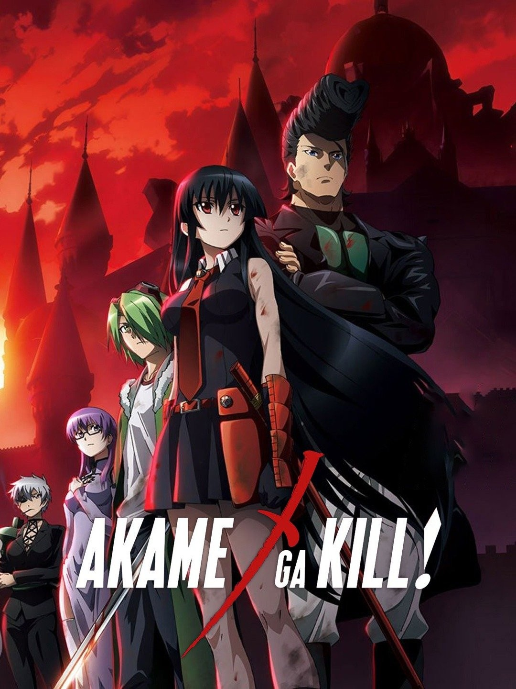
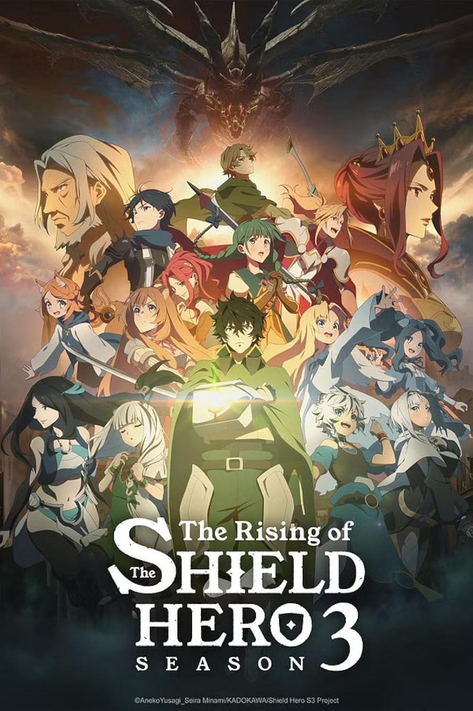

"Naruto" is a Japanese manga and anime series created by Masashi
Kishimoto. The story follows Naruto Uzumaki, a young ninja with dreams
of becoming the strongest ninja and earning the title of Hokage, the
leader of his village, the Hidden Leaf Village (Konohagakure). The
series is set in a fictional world where ninja villages exist, and
individuals train in the art of ninjutsu and other techniques. Naruto is
an orphan who grew up facing prejudice and loneliness because he is the
host of the Nine-Tailed Fox, a powerful and malevolent creature that
attacked the village years before. Despite the challenges, Naruto is
determined to prove himself and gain the acceptance of his fellow
villagers. As the story progresses, Naruto goes through various
missions, battles, and challenges alongside his friends and fellow
ninjas, such as Sasuke Uchiha and Sakura Haruno. The series explores
themes of friendship, perseverance, and the pursuit of one's dreams.
Additionally, it delves into the complexities of ninja politics,
conflicts between villages, and the mysteries surrounding Naruto's own
origins. The sequel to "Naruto" is "Boruto: Naruto Next Generations,"
which follows Naruto's son, Boruto Uzumaki, and his adventures as a
ninja.
One Piece
"One Piece" is a Japanese manga and anime series created by Eiichiro
Oda. The story follows Monkey D. Luffy, a young pirate with the ability
to stretch his body like rubber after eating a Devil Fruit. Luffy sets
out on a grand adventure to find the legendary treasure known as One
Piece and become the Pirate King. Along the way, he gathers a diverse
crew of friends, the Straw Hat Pirates, and faces powerful enemies, all
while exploring a vast and mysterious world filled with islands, seas,
and unique characters. "One Piece" is renowned for its epic
storytelling, intricate world-building, and themes of friendship,
freedom, and the pursuit of dreams.
Fullmetal Alchemist:Brotherhood

"Fullmetal Alchemist" is a Japanese manga and anime series following two
brothers, Edward and Alphonse Elric. After a failed alchemical
experiment to bring their mother back to life, Edward loses his arm and
leg, while Alphonse loses his entire body. To regain their bodies, they
embark on a quest to find the Philosopher's Stone. The series explores
themes of sacrifice, morality, and the consequences of wielding
alchemical power in a richly detailed, steampunk-inspired world.
Log Horizon

"Log Horizon" is a Japanese anime and light novel series that begins
with thousands of players finding themselves trapped in the popular
MMORPG (Massively Multiplayer Online Role-Playing Game) Elder Tale. The
story centers on Shiroe, a strategist, and his friends as they navigate
the game's world and attempt to understand the circumstances of their
predicament. Unlike other trapped-in-a-game scenarios, "Log Horizon"
focuses on the characters' adaptation to the virtual world, exploring
politics, economics, and social dynamics within the game. The series
combines elements of fantasy, adventure, and strategic thinking,
offering a unique take on the MMORPG genre.
Attack On Titan
"Attack on Titan," penned by Hajime Isayama, stands as a monumental dark
fantasy manga and anime series that delves into a world gripped by
terror. In a realm where humanity is ensconced within colossal walls to
shield itself from relentless Titans—gigantic humanoid creatures—Isayama
unfolds a narrative marked by despair, resilience, and an unyielding
pursuit of truth. The tale's linchpin is Eren Yeager, alongside his
adoptive sister Mikasa Ackerman and friend Armin Arlert, as they grapple
with the traumatic aftermath of their hometown's devastation by the
enigmatic Colossal Titan. Swearing to eliminate the Titan scourge and
unearth the mysteries shrouding their existence, the trio enlists in the
Survey Corps—a faction tasked with confronting Titans beyond the walls.
Central to the narrative are the Titans themselves, ranging from
grotesque abominations to towering behemoths capable of shattering human
defenses. The three concentric walls—Maria, Rose, and Sina—provide both
a sanctuary and a chilling backdrop, with the story unraveling the
secrets behind their creation. As "Attack on Titan" progresses, it
unfurls a complex tapestry of intrigue, political machinations, and
ethical quandaries. The series thrusts its characters into a maelstrom
of moral dilemmas, pitting their survival instincts against the thirst
for truth and the consequences of seeking it. The characters within
"Attack on Titan"
are not mere conduits for the plot; rather, they undergo profound
development, grappling with their fears, forging alliances, and
confronting the darker aspects of human nature. The narrative, propelled
by a relentless pursuit of the unknown, is a crucible for the
characters' evolution. Thematically, the series explores survival,
freedom, and the cyclical nature of hatred. It delves into the intricate
dynamics of a society under perpetual Titan threat, scrutinizing the
impact of war on individuals and collective consciousness. "Attack on
Titan" captivates audiences with its gripping action sequences,
intricate storytelling, and audacious narrative choices. Isayama's
creation, spanning 34 manga volumes, culminates in a poignant and
impactful conclusion. The anime adaptation faithfully covers the
multifaceted layers of the story, solidifying "Attack on Titan" as a
quintessential work in the realm of manga and anime.
Magi: The Labyrinth of Magic

"Magi: The Labyrinth of Magic" is a Japanese anime and manga series that
reimagines characters and settings from Arabian Nights. The story
follows Aladdin, Alibaba Saluja, and Morgiana as they embark on
adventures in a world filled with magical dungeons, powerful djinn, and
political intrigue. The trio explores dungeons to conquer powerful
entities known as djinn and uncover the secrets of their world. Along
the way, they encounter various allies and adversaries, challenging the
balance of power in the realm. "Magi" combines elements of fantasy,
action, and political drama, exploring themes of friendship, destiny,
and the consequences of wielding magical powers.
Hunter X Hunter
"Hunter x Hunter" (often abbreviated as HxH) is a Japanese manga series
written and illustrated by Yoshihiro Togashi. The story follows the
adventures of Gon Freecss, a young boy who aspires to become a Hunter
and find his missing father, Ging Freecss, who is a legendary Hunter.
The term "Hunter" in the series refers to individuals with special
skills and a license to pursue dangerous creatures, explore uncharted
territories, and undertake various tasks like hunting criminals or
searching for valuable items. The narrative begins with Gon taking the
Hunter Examination, a rigorous test that challenges applicants
physically and mentally. During the exam, he befriends other aspiring
Hunters, including Killua Zoldyck, Leorio Paradinight, and Kurapika.
Each character has their own motivations and goals for becoming a
Hunter. As the story progresses, Gon and his friends embark on different
adventures, facing challenges, encountering powerful foes, and delving
into the complex world of Hunters, Nen (a form of energy manipulation),
and various unique and dangerous creatures. The series is known for its
intricate world-building, well-developed characters, and strategic
battles.
Akame ga Kill

"Akame ga Kill" is a Japanese anime and manga series that follows
Tatsumi, a young warrior who joins an assassin group called Night Raid
to overthrow a corrupt empire. Set in a dark fantasy world, the series
explores themes of morality, rebellion, and the consequences of wielding
power. As Night Raid members confront powerful adversaries, they
navigate a complex plot with twists and turns, leading to intense and
often tragic confrontations. The series is known for its action, moral
ambiguity, and impactful character arcs.
The Rising of the Shield Hero

"The Rising of the Shield Hero" is a Japanese light novel, manga, and
anime series that begins with Naofumi Iwatani, one of four young men
summoned to a parallel world as the Shield Hero. Despite his initial
lack of combat abilities and a difficult start, Naofumi evolves into a
formidable hero. However, he faces betrayal and adversity, leading him
to become a more cautious and pragmatic protagonist. The series explores
themes of betrayal, redemption, and the resilience of the human spirit
within a fantasy setting filled with monsters, magic, and political
intrigue.
Made in Abyss
"Made in Abyss" is a Japanese anime and manga series set in a mysterious
world centered around a massive, enigmatic chasm known as the Abyss. The
story follows a young orphan named Riko who, along with her robot friend
Reg, descends into the Abyss in search of her missing mother. As they
navigate through different layers of the Abyss, each filled with unique
challenges and wonders, they uncover the mysteries and dangers lurking
within. The series combines elements of fantasy, adventure, and dark
fantasy, and it is celebrated for its rich world-building, emotional
depth, and exploration of the consequences of delving into the unknown.

.jpg)